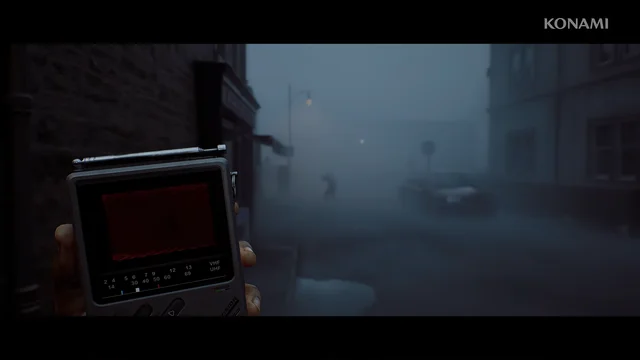

VIDEOJUEGOS
Silent Hill experimenta con el terror en primera persona
Nuevos avances y filtraciones sugieren que la franquicia Silent Hill explorará una experiencia más inmersiva utilizando perspectiva en primera persona, algo que ha generado división y emoción entre los fans del horror psicológico.
Leer más